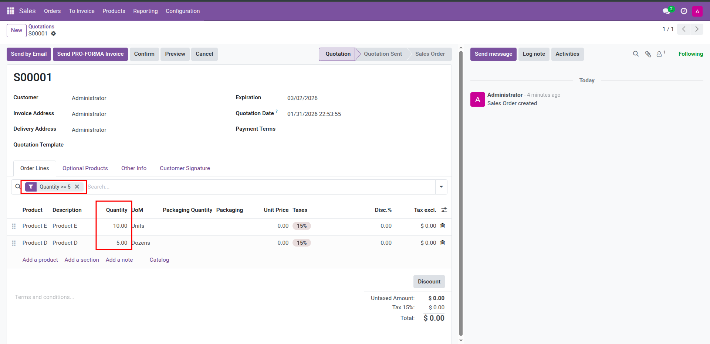
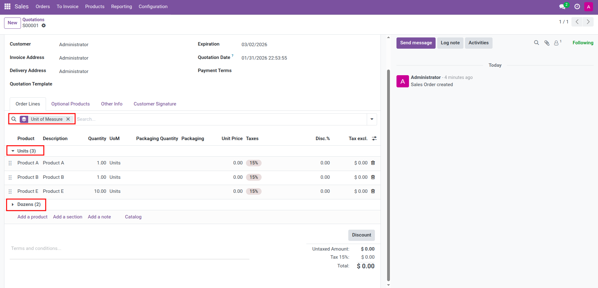

Add Odoo's native search view to One2Many (O2M) and Many2Many (M2M) tree views embedded in form views. No XML changes required—works with your existing models and search views.
ir.ui.view, it is shown automatically.When you open a form that contains an O2M or M2M field with a tree view, the module checks whether the related model has a search view. If it does, the search bar is rendered above the tree. You can type in the search box, apply filters, and use group by exactly like in standard list views. Rows are filtered and grouped in real time without leaving the form.
If the model has no search view, a minimal default search (on a text field) is still provided so you can filter the embedded list.
Apply filters from the search view directly on the embedded tree. Only lines matching the filter are shown.
= 5"/>Use group-by options from the search view to group rows (e.g. by Units, Dozens) without leaving the form.

Odoo 17.0 (or compatible version). Depends only on base and web.
For support, contact muhamed.inbox@gmail.com.